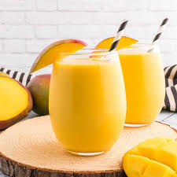

Mango Lassi
Descriton:
Mango lassi is a popular traditional Indian drink made from ripe mangoes, yogurt, milk, and a touch of sweetener such as sugar or honey.
The ingredients are blended together until smooth, creating a thick, creamy, and refreshing beverage. Often, a pinch of cardamom is added
for extra flavor. Mango lassi is enjoyed chilled and is perfect for cooling down, especially during hot weather. It's both a delicious treat
and a nutritious drink, rich in vitamins and probiotics.
Quick Info
- Prep Time:
- 10 minutes
- Total Time:
- 10 minutes
- Servings:
- 2
- Yield:
- 2 servings

Ingredients
- 1 ½ cups mangos - peeled, seeded, chopped, and chilled
- 1 ½ cups plain yogurt
- ½ cup cold milk
- 2 tablespoons heavy cream
- 2 tablespoons confectioners' sugar
- ½ teaspoon ground cardamom
Directions
- Combine mangos, yogurt, milk, cream, confectioners' sugar, and cardamom in a blender; blend until smooth and frothy.
Pour into glasses and serve immediately.